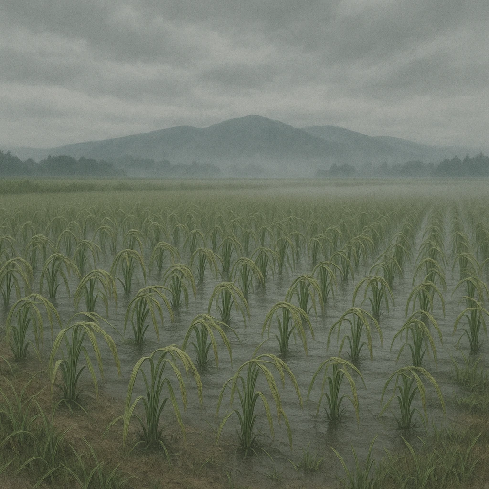

東北地方
奥羽山脈
Ａ
冷たく湿った北東風
千島海流（親潮）
の上を通って冷える
稲が育たない＝冷害

Ⅴ-4
夏の北東風がもたらすもの
夏に
北東
からふく
冷たい風
⑦
夏
にふく図の
Ａ
⑧
やませ
は、冷たく湿った北東風。
おもに
東北地方の太平洋側
にふく
寒流の
千島海流（親潮）
の上を通るので冷たい
くもりの日が続き気温が上がらず、
稲の生育が悪くなる
この災害を
この風が原因で起きる、農作物がとれなくなる災害を
冷害
という（1993年に大きな冷害）。
第11章 日本の地形・自然の特色
SEED EDUCATION